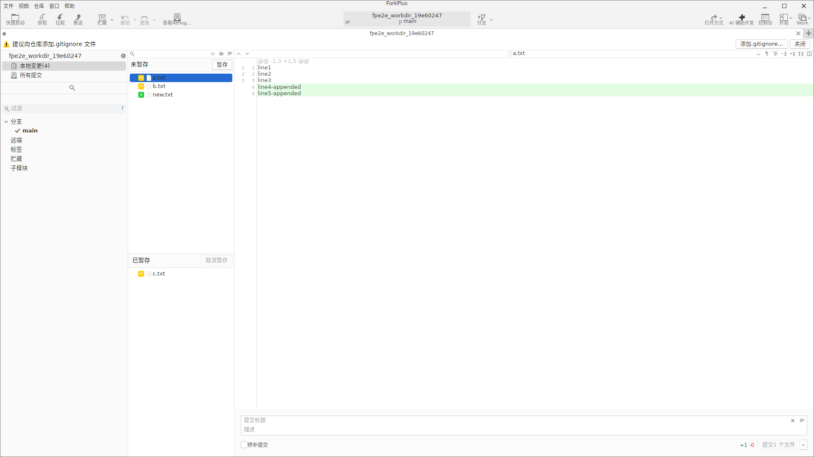
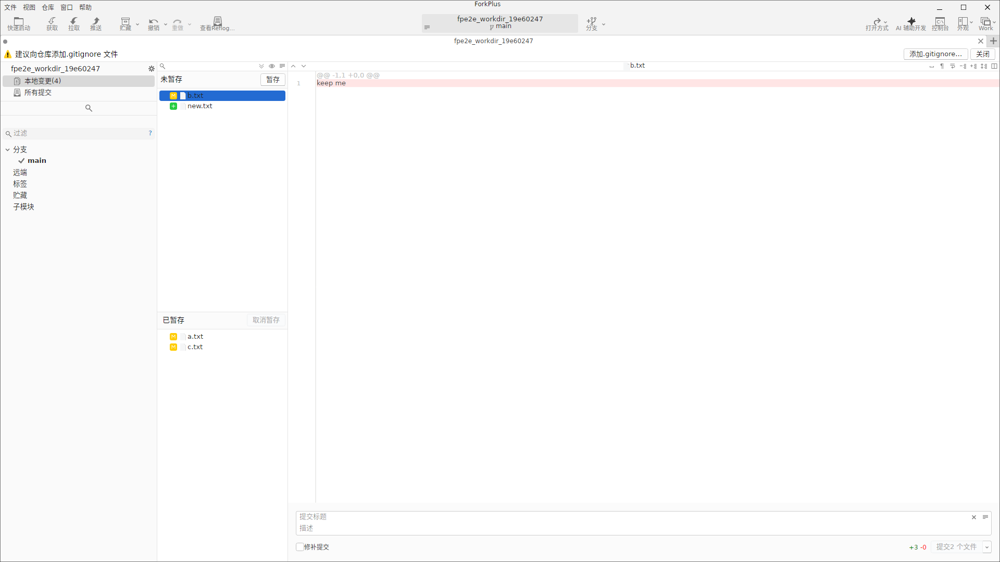
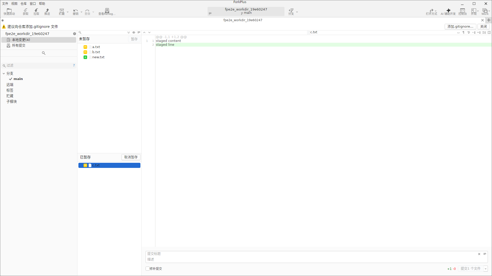
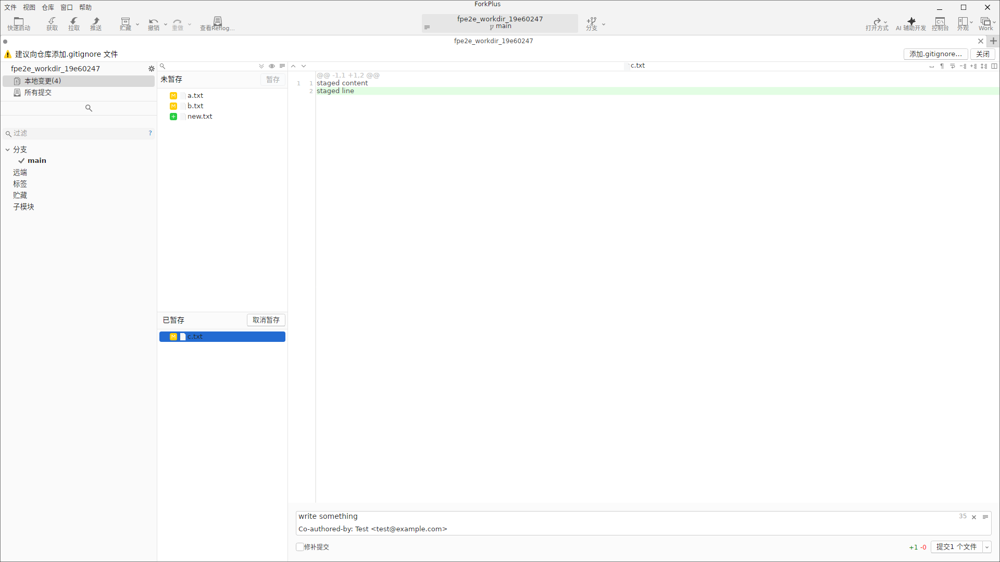
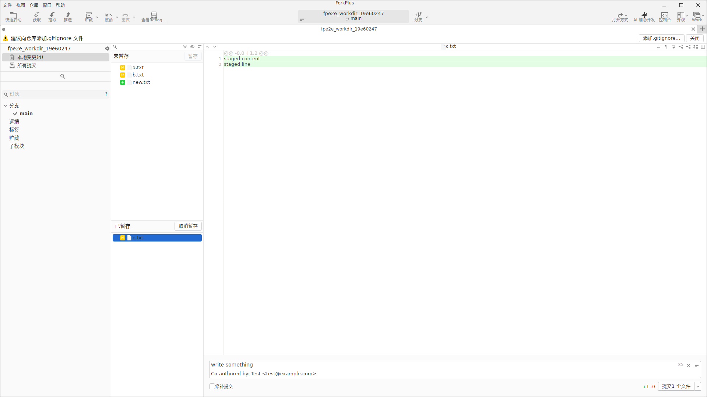
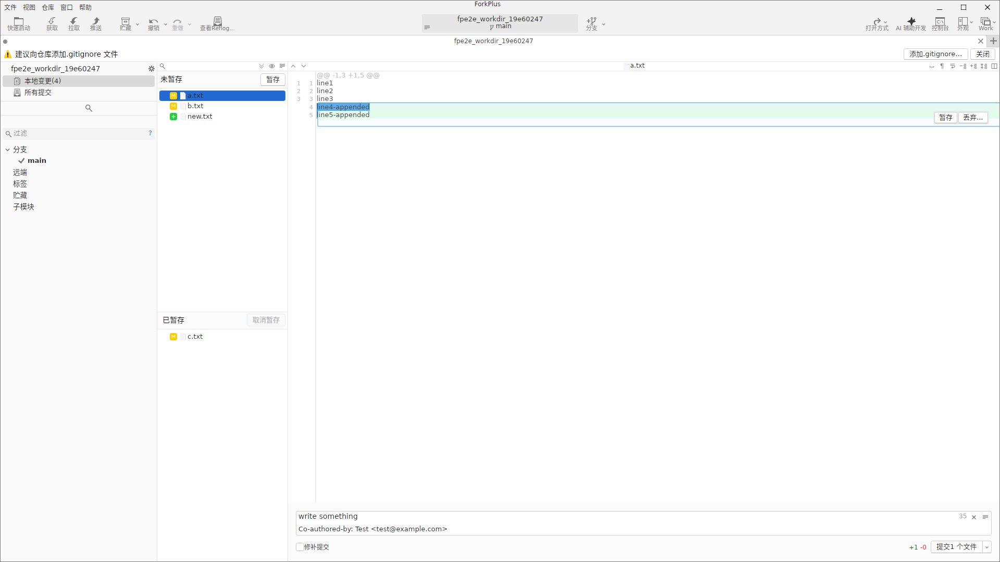

Commit 视图是日常开发最常用的界面：它把工作区中的改动分成「未暂存」与「已暂存」两组，配合右侧的 Diff，帮你有选择地暂存文件（甚至逐行暂存）并填写提交信息完成提交。
工作区状态与文件级暂存
进入 Commit 视图后，中部左侧分为两组：
- 未暂存（上部）：工作区中尚未加入暂存区的文件，图标区分状态——黄色 = 已修改、绿色 = 新增/未跟踪、红色 = 已删除。
- 已暂存（下部）：已通过
git add加入暂存区、准备提交的文件。
工具栏提供 「暂存」（Stage）与 「取消暂存」（Unstage）按钮。选中左侧文件后用「暂存」把它移入「已暂存」区；选中「已暂存」区文件后用「取消暂存」把它移回未暂存。右侧 Diff 会始终跟随当前选中的文件。


小贴士：勾选底部「暂存全部」/「取消暂存全部」按钮（Stage All ↔ Unstage All）可一键批量把整组文件移入或移出暂存区。暂存量会实时体现在底部「提交 N 个文件」按钮上。
取消暂存
若发现某个文件不该进入本次提交，在「已暂存」区选中它并点击「取消暂存」，即可把它移回「未暂存」区，同时右侧 Diff 切换到该文件的工作区版本。

提交消息输入与 Amend
底部是提交消息区：
- 提交标题：提交消息第一行，必填才会启用提交按钮。
- 描述 Description：补充正文。输入
Co-authored-by:等关键字时，ForkPlus 会自动给出补全建议，按 Tab 可填入。 - 修补提交 Amend：勾选后，本次提交会「修正」最近一次提交（合并进上一次提交而不是新增一条），适合修正最后一条提交的遗漏或拼写。
底部右侧实时显示差异统计（如 +3 -0）与可提交的文件数。

文件列表模式切换（树形/列表）
在工作区状态区域可切换文件列表的展示模式：列表模式把所有变更文件平铺排列；树形模式把文件按文件夹层级分组，便于在大型仓库中按目录定位改动。

行级暂存：选区浮窗
ForkPlus 支持比「文件级」更精细的 行级暂存。在未暂存文件的 Diff 编辑器中用鼠标拖选若干行，选区上方会浮动出现 「暂存」 与 「丢弃…」 两个悬浮按钮：
- 暂存：仅把本次选中的行加入暂存区（等价于
git add -p的局部暂存），可在同一个文件里拆分多次暂存。 - 丢弃…：把选中的行还原为暂存区 / HEAD 版本（不可恢复的破坏性操作，会二次确认）。

注意：「丢弃」会真实改写工作区文件且不可撤销。执行前请确认选中的行确实是想要丢弃的内容。